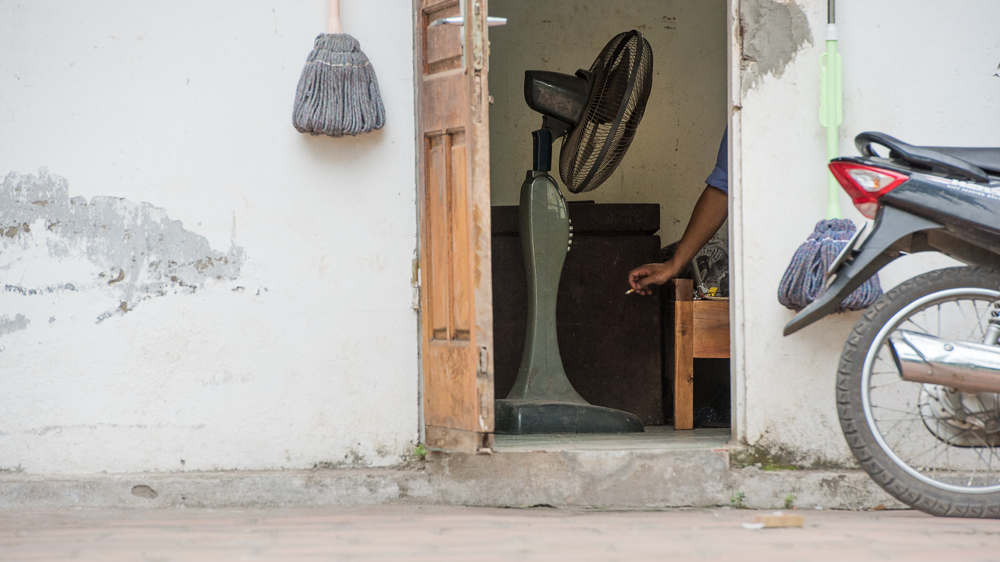
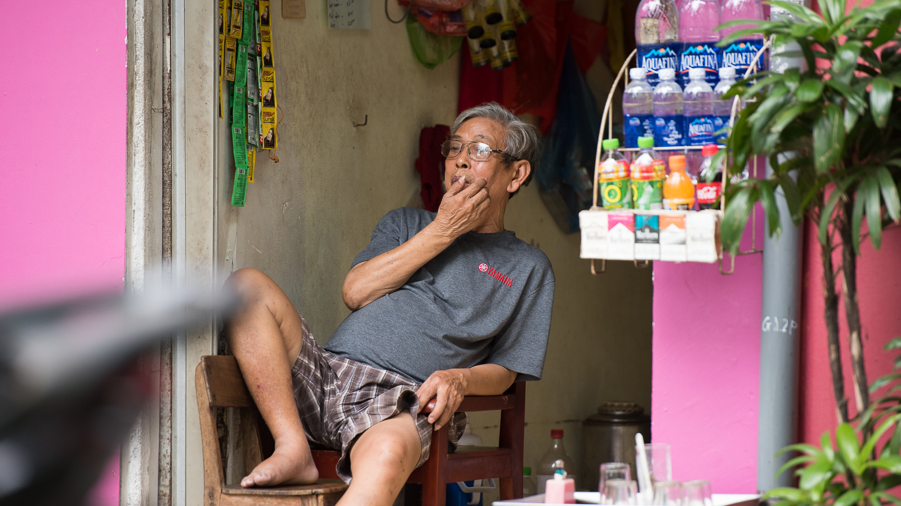


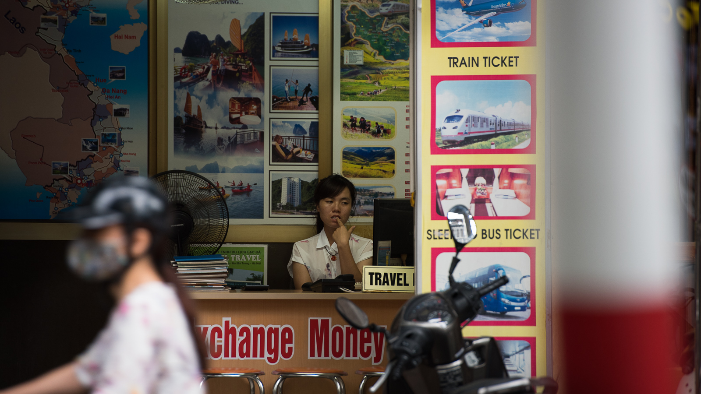
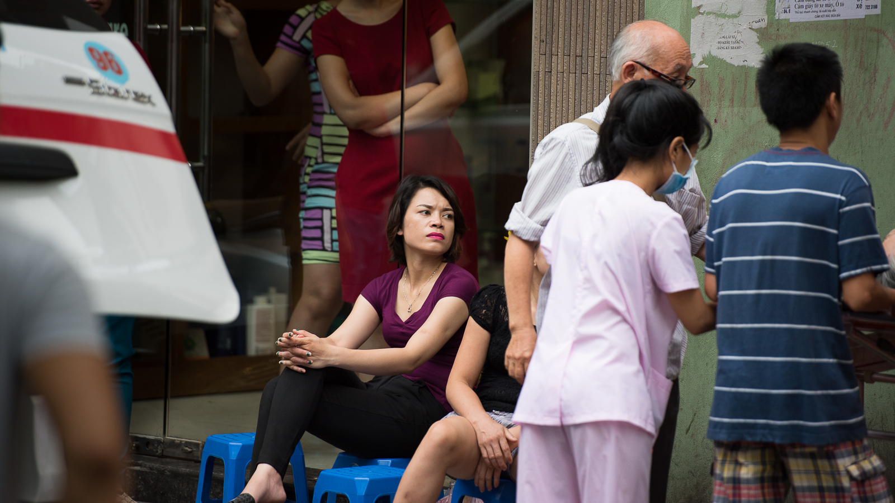
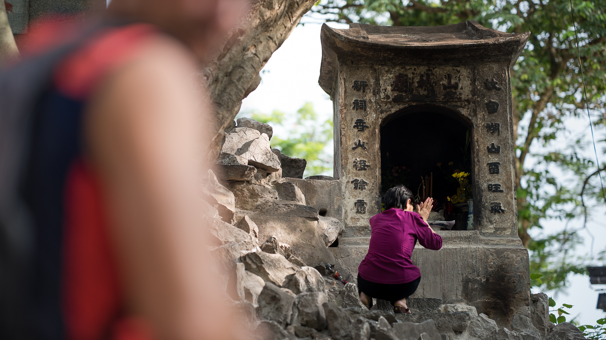
I was shot in Vietnam by an old man. He said he was seventy two years old when I managed to communicate with him using sign language. Even if he could speak I might not have understood him since he had only a few teeth. He was smiling and good natured. Wearing a yellow vest that hung loosely on his bones, he stood straight but leaned forward a little. He walked haltingly, as if each step caught him from falling. I was on the ground as he approached me. I looked up at him thinking what he might have been in a previous age. He was 24 years old in 1967. How he managed to survive without injury or illness to this day puzzled me, and still does. But maybe that is his secret, that he learned long ago to let go. He had no grudge against me personally, clearly an American, he approached me calmly. The sun was behind him and was blinding me. I thought he was a clever adversary to come at me from from that direction. But he kept smiling, as if he knew me, though he could not have. As I waited for the encounter to climax, I felt a memory from childhood wash over over me.
I was in Crete. With my grandparents. The sun was beating down on the bare rocks and igniting the air with the fumes of lavender and thyme. I was an ephebos, just figuring the world out for myself, trying to derive the equations of living from the tumult of personal experience. We came across a monument, almost Soviet in its stark design. It stood at the end of a stone staircase leading to the top of a small hill. A pedestal built from stone blocks had a cross carved into it. Atop stood a concrete diving eagle gripping a swastika in its talons. This monument was erected by Nazis to their fallen comrades in one of the great aerial assaults of the Second World War. I asked my grandparents why the Greeks let that statue stand. Weren't the Nazis the enemy? How many times did I hear of the bad things done by the storm troopers. Why did they leave this monument to their oppressors? But my grandfather said the past is over. And no matter what these soldiers did, they were children once too. They had parents and families who mourned them. My grandparents too had learned to let go long ago.
I showed him the shot I had of him. No play of light, no clever compositon, no artistic merit. But someone told me that art is born of suffering. And clearly this wizened, toothless, wordless man had suffered for many people and many years. And yet he still could smile and prosecute the living.
My guide is Cong. I asked him where the B52 went down and he smiles. Without dropping his gaze or moving his head, he reaches to the counter and points to a map. "Here", he says. "Bygones be bygones". He looks so different than me. Pockmarked skin below delicate eyes frames a bulbous nose and proud lips. He waits. Then smiles and nods. I'm gone. Out the door into the balmy breath that passes for a breeze. I march on. The map has a fingerprint on the destination. I pass thousands of Vietnamese and am ignored. They move forward. Some quick and others slow. Some just loiter, squat and watch the others.
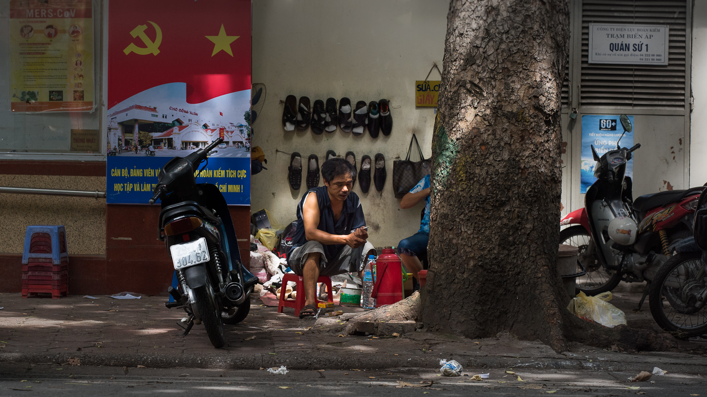 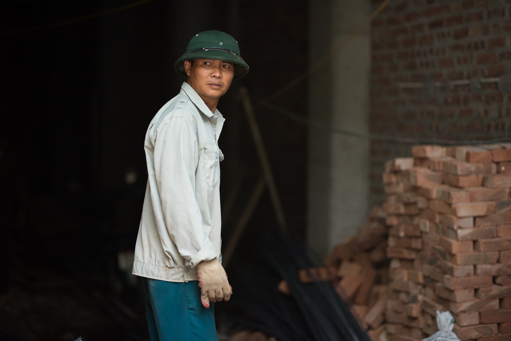
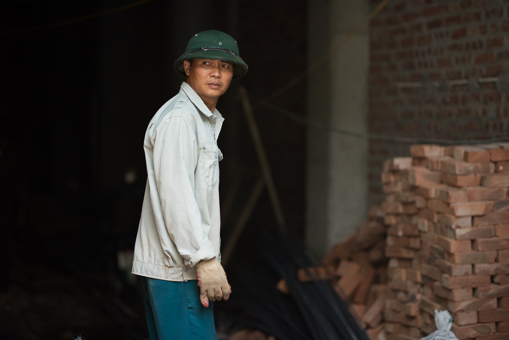
I can pass for an Arab. Once I walked their streets, also unnoticed. And when the towers fell , I asked why but could not find an answer. We had not mined their land and harbors. B52s never darkened their skies. Napalm and agent orange never touched their skin. But here in Vietnam, these memories are real. How can Cong not hate me? Why are there no vietnamese crazies burning US flags? Did they have a lesson in forgiveness that is not taught in the rest of the world?
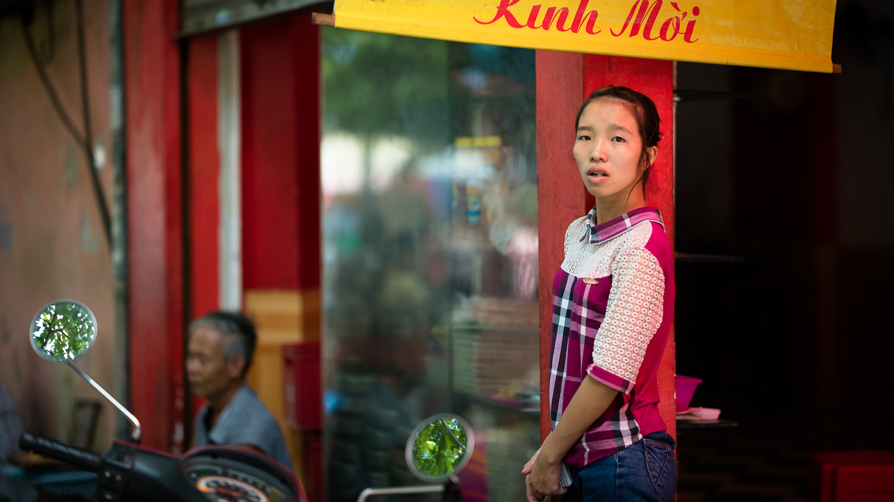 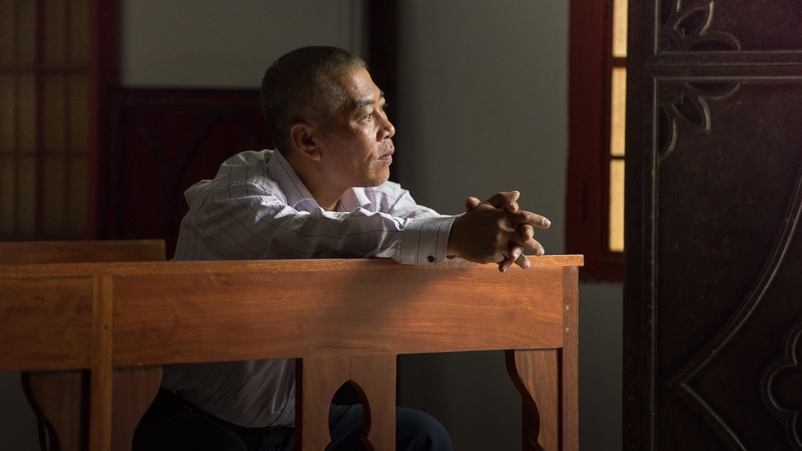The B52 is ahead. A scarred carcass of metal is black in the sun. Cong sees it as an alien artifact. Pieces are laid out just so. Most are recognizable for the parts they were except for a tangled nest of scorched steel and aluminum.
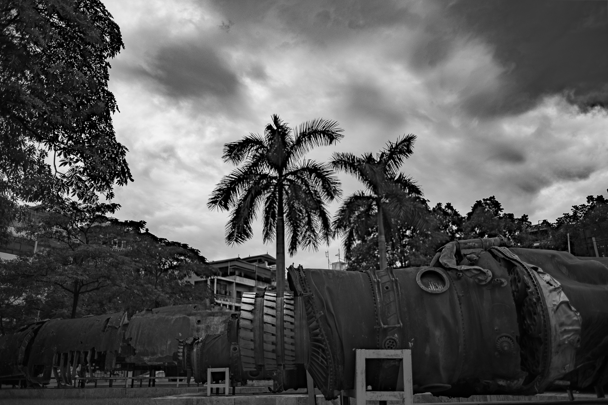A strut juts out like a tree branch. At the end of it is a massive wheel with a shredded tire hanging from it. Ripe fruit is rotting nearby. Thankfully there are no human remains.
I march on. The streets are narrow in the Ba Dinh district. Spread your arms and you touch the buildings on both sides. Full of twisty passages all alike, I spend as much time looking at a map as I do the world. The alley opens up to a square pond. A marble balustrade with a classic design rings it at waist height.
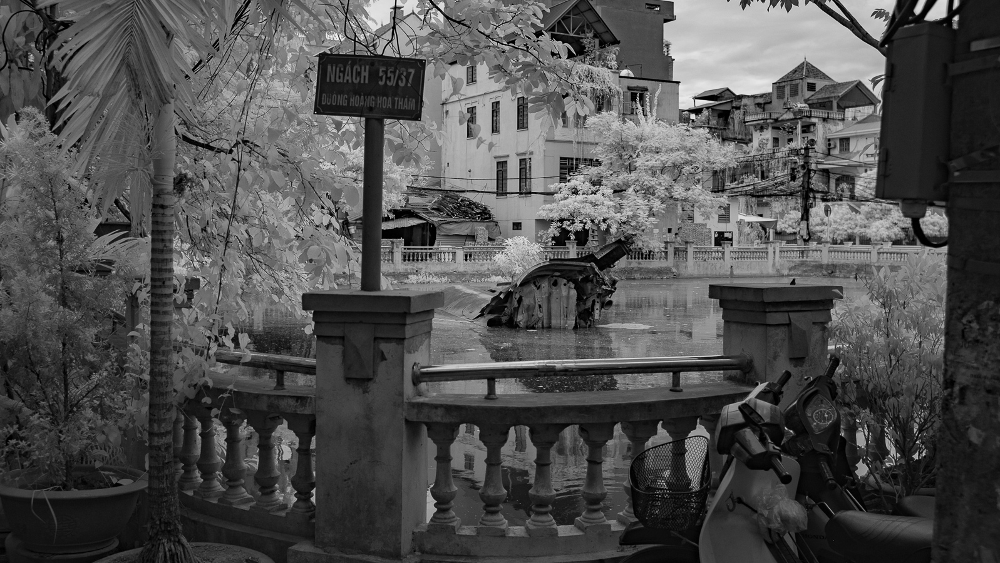
Several cafes decorate the streets and Vietnamese sit on plastic chairs low to the ground. Furniture made for children. Their gaze hardly stops at the remnants of a B52 stuck in the pond since 1972. A tree has rooted in the fragment of fuselage. A single trunk thinner than a baseball bat and less than 10 feet tall, it's no more than a few years old. What happened that a seed finally took root in a hostile machine?


The prison where they kept McCain is a museum. A sign says it is the 'Maison Centrale'. The map says this is Hua Loa prison. For a minute I am puzzled. Different names for the same thing. Walking in it feels like an old schoolhouse. Plaster walls with tall doorways and taller windows. And on the walls, are plaques with names, hundreds of names. A picture here and there. Thousands of names. Some artifacts in display cases are against the walls. But many, many names on brass plaques. This is their Vietnam wall. Except the dates start in the 1940s. Most of the dates are from the 40s and the 50s. Again I stand disoriented wondering where was the story of the Vietnam conflict I remember. There were names of French places and strange stories of colonial events that had nothing to do with the U.S. As I walked from room to room, I felt they were telling me 'see, we suffered and prevailed'.


As the timeline moved ahead I walked into another smaller room but there were fewer names on the wall. There was a picture of US soldiers playing ball, another one of a wounded GI receiving care. More disorientation. I have spoken to POWs who were here and their memories are different. I keep walking. The next room is a dim chamber with a row of lifelike manikins sitting next to each other. Their ankles are shackled. The faces are Vietnamese but the the expressions are placid, content and congenial. Incongruity. As if they might be speculating about the weather or deciding what to order on the menu.
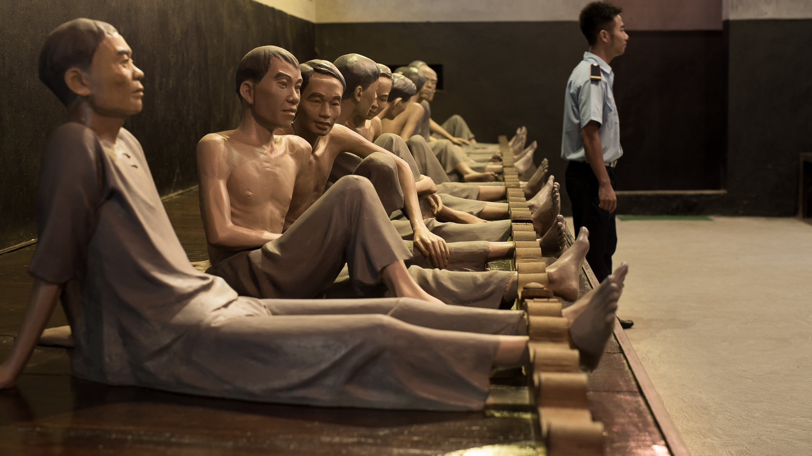


I thought how callous it would seem if the faces of the shackled prisoners were Caucasian. Certainly Americans suffered just like the Vietnamese freedom fighters before them. But the American boys were just following orders. The vietnamese were chasing an ideal, and from the stories in this museum, it would seem they suffered more. Those Vietnamese from that era, who are still alive, are palpably different. They continue the habits that got them through hard times. Every afternoon they gather to exercise as large groups. The communist ideal of physical fitness continues.


That is the last trace of Communism in these people. Certainly, there are architectural monuments, like that built to Ho Chi Minh. But it seems like a Disneyworld. Telling the stories of a remote past that has no purchase on today's busy life. The massive tomb to Ho Chi Minh forbids entry. The edifice is sterile, no one is listening.
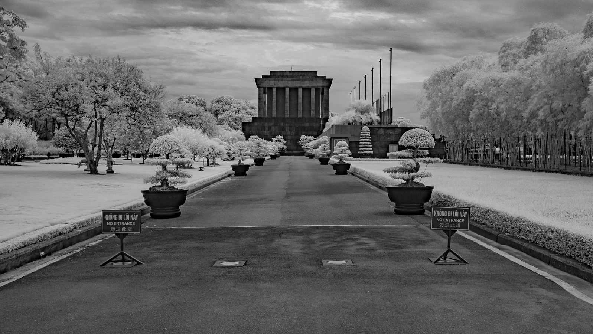


Rather, everyone has returned to living. Sure, the red flag with the yellow star is everywhere. It's festive.


How many nations have a temple of literature? Those two words 'temple' and 'literature' seem as different as space and earth. Literature tells me of all the thoughts humans have written down. The understanding of those things people have perceived, thought, felt and achieved. On the other hand, the idea of a temple tells me of mystical beliefs, thoughts and actions that are not born of human experience. How can a place be built for both purposes? And what is a person supposed to do here? Just thinking that such a place exists is confounding. But the place is so physically peaceful.


I came here to learn something. I inherited a terrifying legacy. My politicians bombed these people into the stone age. My planes ruined their agriculture with toxins. And yet I have not heard of a single Vietnamese terror event against US. Instead, the Vietnamese are racing to build their lives. And despite our efforts to bring democracy to Vietnam 40 years ago, they have leapfrogged us.
What secret enables in the Vietnamese their success? After domination by the Japanese in the second World War, they struggled against returning French colonial imperialism. Finally they achieved their independence in 1954. But still they were subject to political and military forces much greater than their own. The land and the people were devastated by a civil war driven by the wealth and interests of foreign powers. Why did we really go there? Did we want to be close to China in case they became nuclear capable? They did anyway in 1964. Did we want to have a rapid reaction force against Chinese nukes? Why do we play that song so much around the world?
Not until the mid 1970s did Vietnam emerge from a suffocating blanket of constant war. But they did not receive war reparations. They were not rebuilt as was Europe by the Marshall Plan. They were not even given subprime loans. They had no industry to attract outside investors. Foreign tourism did not flourish to infuse and fertilize their currency with stability. But Ha-Noi appears as a metropolis like any other.
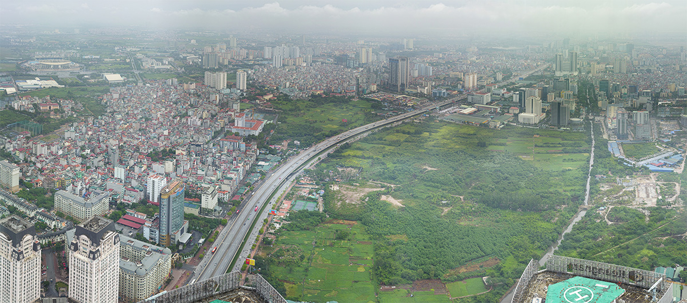 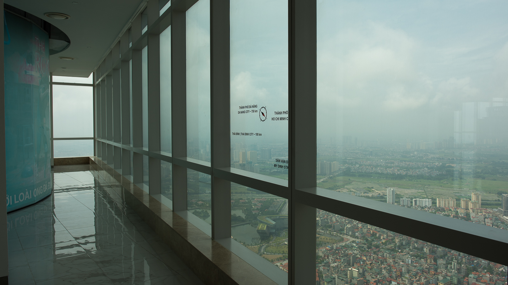 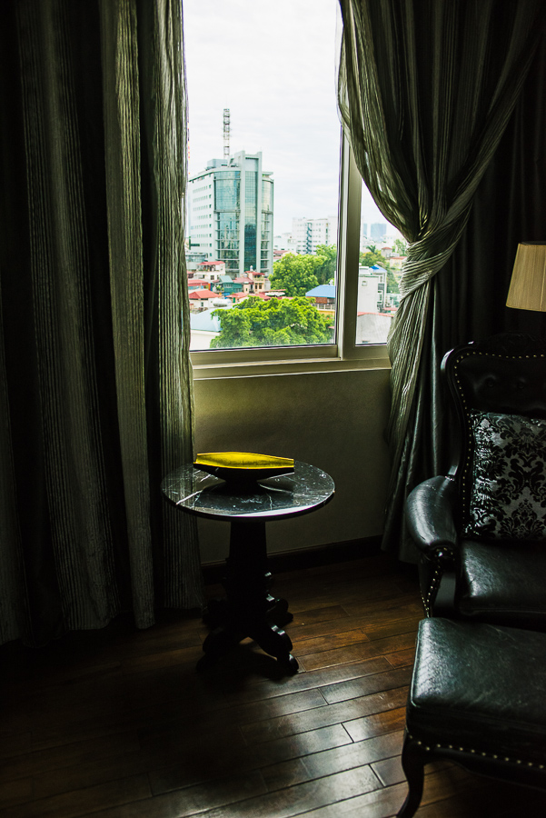I didn't expect a Boston skyline when I looked over Hanoi. But there it was. Maybe it was a side effect of the building frenzy that has gripped China. A contagion contracted by the Vietnamese so they can stand proud next to their Chinese neighbors. I went to the Landmark tower and could have been in any European or American city. Glass and steel rise from massive foundations a city block long. The air-conditioning is chilling relief when you pull open the glass slabs that are doors. Everything looks and feels new. The staff seem out of place. The people are animated, always moving and but often stopping to text or talk into their cell phones. Maybe they haven't gotten over the novelty of the building. The elevator is remarkably quiet. And fast. It takes me 80 stories in the same time I go two stories at a small community hospital where I work. Of course the elevator at home is 50 yeas old and this Vietnamese rocket sled is only 2. My ears pop and the elevator slows giving butterflies when I go near weightless as it decelerates. The doors slide open as fast those on a starship but silently. The observatorium is a big open area. A cafe and a gallery occupy other parts of the floor. The whole place feels like the wing of a major museum, except you are in the clouds. As you walk to the glass walls, the hazy vistas of Vietnam are laid out below. Cars and scooters are the only moving toys on the detailed diorama.People are too small to make out and show as black specks floating in various directions.
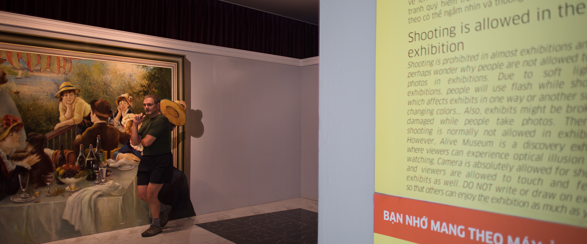In the past 4 decades they have developed a bustling nation with skyscrapers. Ha Noi means the 'city between two rivers'. The marks of burgeoning wealth are appearing - a shopping mall in the historic district that was transplanted from 5th Ave in NY, a jewelry store whose facade recalls the faceted and prismatic quality of a diamond, a Rolls Royce dealership. Amid these icebergs of wealth, there are still crowds and herds living on much less. Though the world moves ahead, they do what they know. They have not given up. There is no sense of entitlement.
It was once this way here in the U.S. Every day we saw signs that life is a struggle. That each person has to find a way to survive and also a way to keep conscience clear. Every action was based on a choice. And the consequences of bad choices or bad luck were plainly evident. Now our wealth and safety nets have erased some of these data points. It seems we act first, impulsively, with instant information from anonymous computer networks that we neglect to evaluate for truth or ulterior motive. And when adversity arises, we look for laws to enable restitution or apology afterwards. If I say "we know how to complain but not appreciate", then I, myself, am complaining. Perhaps a force that guides the Vietnamese is a sense of family that has not yet been diluted by choices and distraction. 'Traditional' real life social interaction seems to be more intact and reminds me of what it once was here. Though I really don't know. I did not live with any families but only watched them.

But the Vietnamese are moving forward. Certainly faster than we are. And women are the major part of their future. They are seen at work as much or more as men. They dress and act as confidently as men. They move and drive no differently than men. They, more than any communist doctrine, are driving Vietnam into the future.


And without many of the safety nets and regulations that we take for granted here. They are jumping into the web right from their phones whereever they are. Can they stop to ask whether their water is safe to drink, their food free of pollutants? It seems they know the air is bad.
Surely there is also a dark side. Men offering a 'good smoke' or referring to a nearby available 'happy ending' were always smiling, soft spoken and quick to recognize a declined offer with a nod of their head. They did not not stop smiling or change their demeanor though. At night, the streets are busy and you do not feel stress though the tempo is no less than any European center.
There are few signs of vandalism, discontent, or predation. There is a disconnect in crossing a busy New York street but finding the occupants polite. When they sit at a cafe (which are numerous and never out of a sightline in the the historic centre) the native Vietnamese are often reflective, contemplative and observing. When they interact, they seem cooperative , not adversarial. Like members of the same soccer team who pass the ball to each other. Not as pugilists in an arena with a winner and a loser. Amidst all the chaos like the video game our lives have become, the Vietnamese have not lost their zen quality.
There are few signs of vandalism, discontent, or predation. There is a disconnect in crossing a busy New York street but finding the occupants polite. When they sit at a cafe (which are numerous and never out of a sightline in the the historic centre) the native Vietnamese are often reflective, contemplative and observing. When they interact, they seem cooperative, not adversarial. Like members of the same soccer team who pass the ball to each other. Not as pugilists in an arena with a winner and a loser. Amidst all the chaos like the video game our lives have become, the Vietnamese have not lost their zen quality. Even their dogs behave differently - cautious and inquisitive, rarely vocalizing - unlike so many dogs of the west intent on marking their territory and barking their dominance.
How is it that other nations equally impoverished have not followed this example, but instead excoriate themselves into destitution as they argue over religious differences.

Crossing the street in Hanoi is an art form. To begin with, the street lights sometimes are not in working order. And even if they are working, the vehicles treat them as suggested driving hints rather than rules. Fortunately, most vehicles only have two wheels. Motor scooters are the preferred transportation device. They putter along and always accelerate and stop gracefully. Though this may reflect the careful skill of the drivers, it may also reflect weak engines and poor brakes. The scooters are a constant stream. Sometimes you can outrun them if you are a fast sprinter. Usually though, the best strategy is to let them see you making steady, small purposeful steps. When they see you, it's like you invited them to dance. They will follow your lead and move around you.

You step a foot off the curb and start crossing the street obliquely in the direction of traffic. You do not slow down, just keep walking and gradually merge with the traffic. Adjust your pace to time your crossing in between vehicles. In general, keep the pace steady. The drivers do not beep their horns because they know that will scare you. They just drift by you, sometimes just coasting. Their scooters have small wheels and this makes them maneuverable. They seem to enjoy their agility and they smile as they pass you. The first few times, it is unnerving because every step you take is a considered decision. You have to scan the environment and make an action plan for the next step. So it is more like hiking a technical trail rather than crossing an intersection. You have to keep your wits about you and take nothing for granted. There is nothing automatic or formulaic. Each crossing is different. And crossing a street is different for every person. A bunch of people crossing the same street will each do it in their own way, with their own style. But in every case, a street crossing is a choreographed give and take between pedestrian and driver. The interaction cannot be rushed or done without mutual consideration. Statistics, if they are to be believed, say that the Vietnamese have the fewest accidents in the SE Asian mainland per capita and per 100000 vehicles. Perhaps this is a telling clue about the Vietnamese - that they are careful about life.

Four showers a day. That's what Ha Noi pushes on you in July. But it's not a hot humidity that suffocates. You do not feel like your blood stopped flowing. That kind of punishment comes off the Atlantic mercilessly in the summer - giant rolls of heat flop over the land from the East coast. Breathing can sometimes feel like swimming. In Ha Noi, the heat feels more delicate. A whisper of a wind comes and goes. There is a lake in the center of the old quarter, Hoan Kiem Lake, Home of Hanoi’s Giant Turtle. In the middle of the lake is a small island with a small stone Pagoda. You can’t get to it–there are no bridges or boats to the island. But it is beautiful and at night splendidly lit.
The lake’s name translates as “Lake of the Returned Sword.” It’s based on a legend of a turtle reclaiming a sword from the Emperor Le Loi. (How does the French word for ‘law’ get mixed up in Vietnamese myth?)The emperor had been given a magical sword by the Golden Turtle God (Kim Qui) to smite the Chinese Ming Dynasty. After successfully fending off the invaders, the emperor was boating on Hoan Kiem Lake when a giant turtle rose up and snatched the sword from him and disappeared into the depths, never to be found again. It was explained as the Golden Turtle God reclaiming the magical sword. There is a giant turtle in Hoan Kiem Lake. Sightings are rare.
Maybe the people are looking for her. More likely they are looking after themselves. The Vietnamese have enjoyed peace and independence for a while now. They have the luxury of leisure time. It seems they have the freedom to pursue what makes them happy. But they also are confronted with the unforseen consequences of those choices - just as we are.